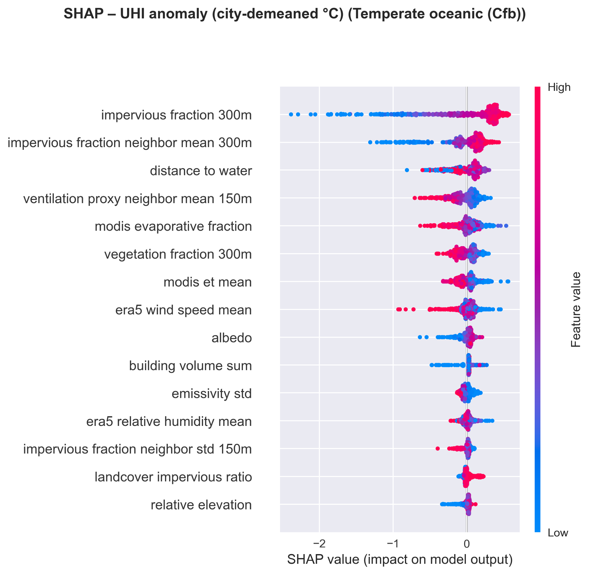
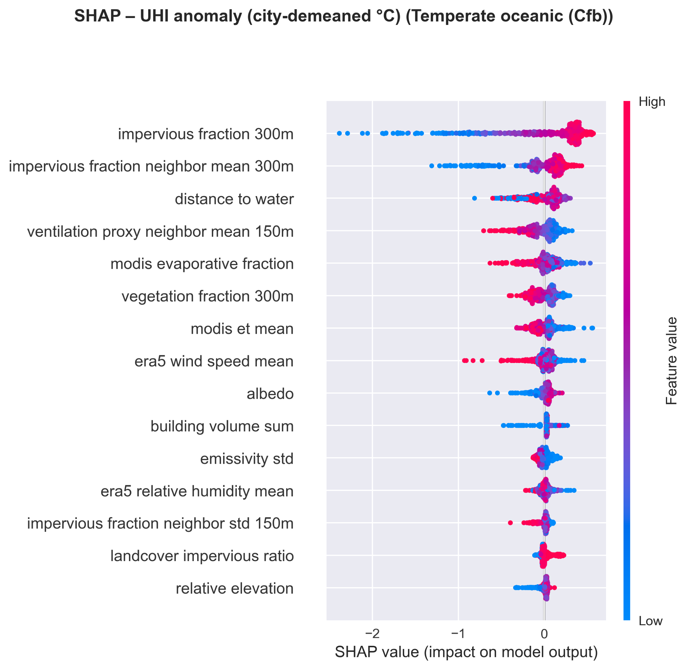

The Data Opportunity
Every year, cities gain access to more and richer data about their built environment.
The barrier is no longer data availability. It’s data integration.
How do we integrate this data to make our cities cooler?
Three Gaps Preventing Action
Integration
Studies look at buildings, trees, or streets separately. Heat comes from how they interact.
Transferability
Vegetation cools 3× more in Berlin than in Athens. Same strategy, different results.
Action
Planners need the where, the why, and the how. Most models only give the first.
Two questions: What drives urban heat across contexts? And where should cities intervene to protect the most vulnerable?
Six Cities, Three Climates
Oceanic (Cfb): Amsterdam, Paris
Mediterranean (Csa): Athens, Barcelona
Transitional: Berlin Cfb/Dfb · Madrid Csa/BSk
40,344 grid cells at 30m resolution
~6 km² per city

Five Data Sources, One Framework
No single dataset captures urban heat. The novelty is data fusion: 118 features from 5 open-source tools. Zero proprietary data.

Google Earth Engine
Landsat 30m · Surface temperature · Vegetation indices Land Surface Temperature
Land Surface Temperature
 NDVI Vegetation Index
NDVI Vegetation Index
Urbanity
Street network topology · Connectivity · Ventilation pathways Our six cities: network topology
Our six cities: network topology
GlobalStreetscapes
10 million street-level images · Green View Index · Pedestrian perspective Our six cities: coverage points
Our six cities: coverage points
EUBUCCO
3D building morphology · Heights · Footprints · Aspect ratios
Six Cities in 3D


From Prediction to Prescription
1. Regression
Predict temperature across 40,344 cells
Output: temperature map + what drives heat in each cell
2. Classification
Identify hotspots with calibrated probabilities
Output: risk tiers + priority zones weighted by vulnerability
3. Scenario Grid Search
648 intervention combinations tested
Output: what to change, where, and by how much
Building the Model
Spatial Cross-Validation
Can We Predict Heat Across Contexts?
| City | R² | RMSE |
|---|---|---|
| Paris | 0.932 | 0.51°C |
| Barcelona | 0.926 | 0.84°C |
| Amsterdam | 0.880 | 0.44°C |
| Athens * | 0.730 | 0.68°C |
| Berlin | 0.727 | 0.68°C |
| Madrid | 0.718 | 1.58°C |
Paris and Barcelona lead (R² > 0.92). Athens is the honest exception.
Honest exception: Athens R² drops from 0.751 to 0.730 (−2.8%). Topographic basin effects override climate-zone correction.

What Actually Drives Urban Heat?
Geography Changes Everything
Temperate Oceanic (Cfb)
Paris, Berlin, Amsterdam
→ Impervious surface fraction dominates
Mediterranean (Csa)
Athens, Barcelona
→ Albedo and built-up index dominate
Semi-arid transitional (Csa/BSk)
Madrid
→ Drought stress amplifies impervious heating
Geographic contingency isn’t noise. It’s the signal.
 

Top: Mediterranean (Csa) · Bottom: Temperate Oceanic (Cfb)
Classifying Hotspots
Hotspots = cells significantly above the city's typical temperature
- XGBoost classification, upweighted to catch rare hotspots
- Calibrated probabilities: when the model says 0.7, it means 70%
- Threshold set to catch at least 60% of real hotspots
Athens: 30.8% vs Paris: 7.2%

Risk Tiers Across Cities
Five tiers combining heat intensity with cooling potential:
- Severe: extreme heat + high vulnerability
- Very high: extreme heat + medium, or high + high
- High: high heat + medium/low
- Moderate · Baseline
These tiers feed directly into priority zone scoring for the scenario grid search.

Who’s Most At Risk?
When we classify hotspots rather than predict temperature, the ranking inverts. Demographic vulnerability (children and elderly density) becomes the #1 predictor.
high-vulnerability areas
Priority zone scoring: Heat risk (40%) + Demographic vulnerability (35%) + Cooling potential (25%)
Hotspots aren’t just where heat is generated. They’re where vulnerable people experience it.

The 50% Regime Boundary
What Should Each City Do?
Cooling potential scales with how sealed the city is. The more concrete, the more room to gain:
| City | Cooling | What to prioritise |
|---|---|---|
| Athens | −1.45°C | De-seal the basin floor |
| Barcelona | −1.31°C | Open up sealed courtyards |
| Paris | −1.22°C | De-seal the dense core |
| Berlin | −1.08°C | Distribute across multiple centres |
| Amsterdam | −0.92°C | Surface materials and albedo |
| Madrid | −0.89°C | Cool roofs + drought-tolerant planting |
Same anchor everywhere: de-seal first. The supporting levers change by city.

Blue-Green Synergy & Co-Benefits
Who Benefits? Who Gets Displaced?
Cooling interventions risk green gentrification, improving places while displacing people.
Priority zones often coincide with historically disinvested neighbourhoods.
Historically redlined neighbourhoods: +4°C hotter (Hoffman et al. 2020)
Rent Stabilisation
Freeze rents in intervention zones to prevent displacement during and after cooling upgrades.
Inclusive Planning
Cooling improvements should come with safeguards so existing residents benefit, not get priced out.
Participatory Governance
Residents co-design interventions. The model identifies where, communities decide how.
Technical optimisation without equity safeguards is incomplete.
Three Insights for Urban Heat Policy
Heat is a neighbourhood problem
Cooling propagates 300 metres under normal wind conditions. Effective intervention requires coordinated action across blocks, not isolated plots.
The surface matters more than the canopy
Surface permeability drives 3× more cooling than vegetation. De-sealing deserves the same investment priority that tree planting currently receives.
Every city needs its own strategy
The same tree cools 8-12°C in Berlin but only 0-4°C in Athens. What works depends on where you are.
What This Framework Cannot Do
- Daytime only: Landsat passes at 10:30 AM, not nighttime when mortality peaks
- Correlations, not causes: the 50% threshold needs field validation before policy
- 30m resolution: screens neighbourhoods, not individual streets
- Uneven coverage: street-level imagery covers 29–71% by city
But: satellite features alone carry most of the signal. Any city with access to free satellite data can run this pipeline tomorrow.
Waiting for perfect evidence while heatwaves kill thousands is itself a policy choice.
References
[1] Ballester, J. et al. (2023) ‘Heat-related mortality in Europe during the summer of 2022’, Nature Medicine, 29(7), pp. 1857-1866.
[2] Oke, T.R. et al. (2017) Urban Climates. Cambridge: Cambridge University Press.
[3] Lundberg, S. & Lee, S.-I. (2017) ‘A unified approach to interpreting model predictions’, NeurIPS.
[4] Schwaab, J. et al. (2021) ‘The role of urban trees in reducing land surface temperatures in European cities’, Nature Communications, 12, 6763.
[5] Stewart, I.D. & Oke, T.R. (2012) ‘Local Climate Zones for urban temperature studies’, BAMS, 93(12), pp. 1879-1900.
[6] Gorelick, N. et al. (2017) ‘Google Earth Engine’, Remote Sensing of Environment, 202, pp. 18-27.
[7] Fujiwara, K. et al. (2026) ‘VoxCity: A seamless framework for open geospatial data integration, grid-based semantic 3D city model generation, and urban environment simulation’, Computers, Environment and Urban Systems, 123, 102366.
[8] Yap, W. et al. (2023) ‘Urbanity: Automated modelling and analysis of multidimensional networks’, npj Urban Sustainability.
[9] Hou, Y. et al. (2024) ‘Global Streetscapes: A comprehensive dataset of street-level imagery’.
[10] Anguelovski, I. et al. (2019) ‘New scholarly pathways on green gentrification’.
[11] Gunawardena, K.R. et al. (2017) ‘Utilising green and bluespace to mitigate UHI’, Sci. Total Environ., 584-585, pp. 1040-1055.
[12] Li, X. et al. (2024) ‘Cooling efficacy of urban trees: A synthesis of 182 studies’.
[13] Giannopoulou, K. et al. (2011) ‘Summer UHI characteristics in Athens’, Sustain. Cities Soc., 1(1), pp. 16-28.
[14] Santamouris, M. (2020) ‘Recent progress on urban overheating and heat island research’.
[15] Marginean, R. et al. (2024) ‘High-resolution modelling of heat vulnerability projections’.
[16] Hoffman, J.S. et al. (2020) ‘Effects of historical housing policies on resident exposure to intra-urban heat’, Climate, 8(1), 12.
[17] Eyni, A. et al. (2025) ‘Distributional outcomes of UHI reduction pathways’, Scientific Reports, 15, 9594.
[18] Camps-Valls, G. et al. (2025) ‘AI for modelling extreme weather and climate events’, Nature Communications, 16, 1919.
[19] Li, X. et al. (2015) ‘Assessing street-level urban greenery using Google Street View’, Landscape & Urban Planning.
[20] Cheval, S. et al. (2024) ‘Systematic review of UHI and heat waves research’, Climate Risk Management, 44, 100603.
[21] Li, D. et al. (2020) ‘Influence of density and morphology on the UHI intensity’.
[22] Lemus-Cánovas, M. et al. (2020) ‘Estimating Barcelona’s metropolitan UHI’.
[23] Sharston, R. et al. (2025) ‘Urban morphology and UHI: Review of interactions’.
[24] Lei, B. et al. (2025) ‘Developing urban comfort assessment with XAI’.
[25] Jiménez-Muñoz, J.C. et al. (2014) ‘Land surface temperature retrieval methods’.
[26] Biljecki, F. et al. (2015) ‘Applications of 3D city models’, ISPRS Int. J. Geo-Inf., 4(4), pp. 2842-2889.
[27] Chen, T. & Guestrin, C. (2016) ‘XGBoost: A scalable tree boosting system’, KDD, pp. 785-794.
[28] Voogt, J.A. & Oke, T.R. (2003) ‘Thermal remote sensing of urban climates’, Remote Sensing of Environment, 86(3), pp. 370-384.
[29] Kovats, R.S. & Hajat, S. (2008) ‘Heat stress and public health’, Annu. Rev. Public Health, 29, pp. 41-55.
[30] Zhang, Y. et al. (2025) ‘Multi-city UHI modelling with gradient boosting ensembles’.
Full bibliography: github.com/gerardoezequiel/ShapingCoolCities
Any Questions?
github.com/gerardoezequiel/ShapingCoolCities
gerardo.ezequiel.22@ucl.ac.uk
linkedin.com/in/gerardoezequielmc